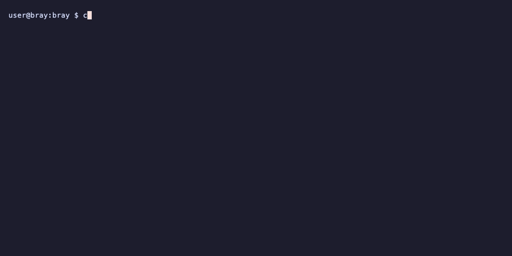

// the field guide
Give your AI a place on Nostr.
This is the complete walk from nothing to a working identity: connecting Claude or any MCP client, creating your keys, backing them up properly, telling the network who you are, and the everyday rhythm of following, posting, messaging and paying. Every recording below is a real session, driven by plain English. When you are settled here, the trust guide covers what makes bray unusual.
BEFORE YOU START
Bray connects an AI assistant to Nostr, the open social protocol where your identity is a key you hold rather than an account a company lends you. Once connected, you do not learn commands or tools. You say what you want in plain English, and your assistant does it: posts, messages, payments, introductions, proofs. The recordings on this page are exactly that, real sessions where one sentence does the work.
You need Node.js 20 or newer and one of the following:
an AI client that speaks MCP (Claude Desktop, Claude Code, Cursor and
most others qualify), or just a terminal, because everything bray does
is also a command line. There is nothing to install up front;
npx nostr-bray fetches and runs it.
Nothing here creates an account anywhere. Your keys are generated on your machine and stay on it, and bray talks directly to Nostr relays. There is no server of ours in the middle.
KEYS, IN PLAIN WORDS
Nostr has no sign-up. An identity is a pair of keys: a public one and a
secret one. The public key, written as an address starting
npub1…, is your name on the network; share it
freely. The secret key, written nsec1…, is what
signs everything you publish; it never goes to anyone, ever. Whoever
holds the secret key is you, which is the whole point and the whole
risk.
Your posts travel through relays, ordinary servers that pass events along. You are not tied to any of them; if one misbehaves you use others, and your identity comes with you because it lives in your key, not on their disk.
Bray adds one more idea worth knowing before you begin: personas. From a single master key it can derive any number of separate identities, for work, for a project, for your agent, each with its own npub, none linkable to the others unless you choose to prove it. One backup covers all of them.
CONNECT YOUR AI
Bray is an MCP server, which means any MCP-speaking client can drive it. Pick your door.
Claude Desktop
Add bray to claude_desktop_config.json (find it under
Settings, Developer, Edit Config), then restart Claude Desktop:
{
"mcpServers": {
"nostr": {
"command": "npx",
"args": ["nostr-bray"]
}
}
}
Claude Code
claude mcp add nostr -- npx nostr-bray
Anything else, or no AI at all
Cursor, Windsurf and the rest take the same command and arguments in
their own MCP settings. And every workflow on this page also works from
a plain terminal: npx nostr-bray --help lists the
commands.
Where the key comes from
Bray signs with a secret key you provide; it will not invent one behind your back. If you already live on Nostr, use the key you have. Brand new? One command mints one, and it works before anything else is configured:
npx nostr-bray create
It prints your npub and a 24-word phrase. The words are the key: write
them down and keep them offline, because nothing can recover them for
you. (A key minted by any Nostr app works just as well; an
nsec1… from Damus or Amethyst is the same kind of
secret.)
Put the key in a file rather than a variable, restrict the
permissions, and point ~/.config/bray/config.json at it:
mkdir -p ~/.nostr && chmod 700 ~/.nostr # paste the 24 words (or an nsec) into the file, then: chmod 600 ~/.nostr/secret.key
{
"secretKeyFile": "/home/you/.nostr/secret.key",
"relays": ["wss://relay.damus.io", "wss://nos.lol"]
}
Write the path in full; ~ is not expanded here. Secrets
are referenced by file path so they never sit in the config
itself. The safest arrangement of all is a signing device or NIP-46
bunker, where the key never touches bray at all; the
security section of the front page ranks the
options.
YOUR FIRST IDENTITY
The key in your file is the master identity, and the first useful thing to do with it is not to use it. Ask your assistant to derive a persona and switch to it: one sentence, and you have a working identity with its own npub, cryptographically separate from the master, ready to sign your daily life while the master stays out of harm's way.
whoami is the habit worth forming. It answers with the
identity currently doing the signing, and everything else follows it:
switch persona and your posts, messages and payments all follow to the
new npub with no further configuration.
BACK IT UP BEFORE ANYTHING ELSE
On Nostr, key loss is identity loss. There is no recovery email and
nobody to appeal to, so the backup happens now, before the identity is
worth anything, not later when it is. The 24 words from
create are already a backup, but a backup with a single
point of failure: one piece of paper, one fire.
Bray's answer is Shamir secret sharing: the master secret is split into several word lists, called shares, and only a chosen threshold of them can rebuild it. Ask for a 2-of-3 backup and you get three shares of which any two recover the key. One goes in a drawer at home, one to a person you trust, one somewhere else entirely. No single share reveals anything on its own, so no single burglary, flood or falling-out costs you the identity.
npx nostr-bray backup ./shards 2 3.
Because every persona is derived from the master, this one backup covers your whole tree of identities, present and future. Write the shares on paper; paper does not get ransomware.
SAY WHO YOU ARE
A profile is a signed event like everything else on Nostr: a display name, some words about you, a picture if you like. Ask your assistant to set them and they publish to your relays, where every client that meets you will read them.
The other half of being findable is a NIP-05 address,
a human-readable name like you@your-domain.com that any
Nostr client can resolve back to your npub. It is not a login, just a
signpost that domain owners can publish. Bray can look one up, verify
that it really points at the npub it claims, and generate the file you
would host to have one of your own.

FIND YOUR PEOPLE
A fresh identity follows nobody, so the network starts silent. Following on Nostr is a list you own: a signed contact list that travels with your key and works in every client. Ask your assistant to find accounts worth following and it will search, summarise who it found, and follow the ones you approve.
From then on, your feed and notifications are one question away: what is happening, who replied, what did so-and-so post this week. Names work anywhere an identity is expected; bray resolves a display name, a NIP-05 address, an npub or raw hex without being told which it has been given.
POST SOMETHING
Publishing is a sentence: post a note saying whatever you want said. The event is signed with the active persona's key and sent to your relays; replies and reactions work the same way, by describing what you want rather than hunting for an event ID. Your assistant keeps track of what it just posted, so a follow-up is simply the next sentence.
Posts do not have to happen while you are at the keyboard. Bray can sign an event now and release it later, at a set time or on a schedule; the front page shows the shape of it.
PRIVATE MESSAGES
Direct messages in bray use NIP-17 gift wrapping by default, which is worth translating: not only is the message encrypted, but so is who sent it, who receives it, and when. A relay carrying your DM holds a sealed envelope inside another sealed envelope, addressed in a way only the recipient can unwrap. There is no setting to find; the most private option is simply what happens.
Reading works the same way: ask for the inbox, or for the conversation with a particular person. Older clients that only speak the legacy DM format still reach you; bray answers in kind only if you have explicitly allowed it.
MONEY OVER LIGHTNING
Nostr and Lightning payments are close neighbours. A zap is a Bitcoin payment, usually a small one, attached to a person or a post; sending one is as ordinary as reacting. Bray connects to a wallet you already have through Nostr Wallet Connect, so the wallet keeps custody and bray only asks it to pay.
That refusal is the security model working. Until you connect a wallet, balance, invoice and payment all decline, and bray tells you exactly what it needs rather than improvising with money.
nostr+walletconnect:// string
from your wallet (Alby, Coinos, Primal and most Lightning wallets can
issue one). Each persona can have its own wallet, or none. After
that, balance, invoice and payment are one sentence each.
WHERE NEXT
- The trust guide
- What makes bray unusual: checking who is real, vouching, anonymous group proofs, encrypted circles, and staying safe under pressure. Continue there when the everyday rhythm feels settled.
- The front page
- Every tool group at a glance. Click any tool name for the exact prompt to try it yourself, the terminal one-liner where the CLI covers it, and a real recorded session where one exists.
- The written docs
- The usage guide covers the same ground as this page in command form, plus dispatch between agents, scheduled posting and duress configuration.
- For your agent
- llms.txt is a summary written for AI context windows; give it to an agent that needs to learn bray quickly.
WHEN SOMETHING FIGHTS BACK
- The assistant answers, but nothing reaches Nostr
- The MCP server is probably not running. Check the config file path
and JSON syntax, restart the client, and ask it to run
whoami; if that fails, the connection is the problem, not the network. - npx cannot run nostr-bray
- Check
node --version; bray needs Node 20 or newer. Corporate proxies can also block npm's registry, in which casenpm install -g nostr-brayfrom a network that allows it gets you a global install instead. - Posts publish but nobody sees them
- Almost always relays. Ask your assistant to check relay health;
if your list is empty or unreachable it will say so, and setting
wss://relay.damus.ioandwss://nos.lolis a sound start. - A NIP-05 name will not verify
- The domain has to serve the file over HTTPS with the right CORS header, and the npub in it has to match. Ask for the lookup and the verification separately; the failing half names the culprit.
- Zaps fail
- Check the wallet connection first: ask for the balance. If that answers, the wallet is fine and the recipient simply may not accept zaps; not every profile carries a Lightning address.
- Something else entirely
- Ask the assistant what went wrong; tool errors come back in plain text and it will usually diagnose itself. Failing that, the issue tracker is read by the people who wrote the code.